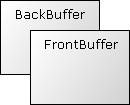

Hilfe
SetBuffer


Aufruf
Parameter
Rückgabewert
Beschreibung
Beispiel
Siehe auch
Wert = SetBuffer(Buffer)
Parameter
| Buffer |
Grafikbuffer für die Grafikausgabe. Es kann BackBuffer , FrontBuffer oder ImageBuffer verwendet werden. , FrontBuffer oder ImageBuffer verwendet werden.
|
Rückgabewert
Nur bei BlitzPlus verfügbar: Identität eines Buffers, das vor SetBuffer aktiv war.
Beschreibung
Der Befehl SetBuffer setzt den aktuellen Grafikbuffer. Alle Grafikbefehle, die danach ausgeführt werden, erscheinen auf dem gesetzten Buffer. Nach dem Programmstart ist der gesetzte Buffer FrontBuffer. Dadurch erscheint die Grafik sofort auf dem Bildschirm. Wird BackBuffer verwendet, dann wird die Grafik erst im unsichtbaren Hintergrund berechnet und danach mit Flip sichtbar gemacht. Man kann aber auch ImageBuffer verwenden und die Grafik in ein Bild einzeichnen.

Für Spiele ist BackBuffer empfehlenswert. Dadurch erscheint die Grafik flimmer- und ruckelfreifrei, da ein Bild im Hintergrund berechnet wird.
empfehlenswert. Dadurch erscheint die Grafik flimmer- und ruckelfreifrei, da ein Bild im Hintergrund berechnet wird.Beispiel
Standardbeispiel:
;Dieses Programm benutzt BackBuffer für eine flimmerfreie Darstellung. Hier erscheinen 10 Kreise, die um einen Punkt kreisen:
Graphics 640, 480, 0, 1
SetBuffer BackBuffer()
While KeyDown(1) = 0
Color 0, 0, 0
Rect 0, 0, 640, 480
Color 255, 255, 255
Winkel = (Winkel + 2) Mod 360
Rad = (Rad + 1) Mod 360
For i = 1 To 10
X = 320 + Cos(Winkel + i * 36) * Sin(Rad) * 220
Y = 240 + Sin(Winkel + i * 36) * Sin(Rad) * 200
Oval X - 20, Y - 20, 40, 40, 1
Next
Flip
Wend
End
Graphics 640, 480, 0, 1
SetBuffer BackBuffer()
While KeyDown(1) = 0
Color 0, 0, 0
Rect 0, 0, 640, 480
Color 255, 255, 255
Winkel = (Winkel + 2) Mod 360
Rad = (Rad + 1) Mod 360
For i = 1 To 10
X = 320 + Cos(Winkel + i * 36) * Sin(Rad) * 220
Y = 240 + Sin(Winkel + i * 36) * Sin(Rad) * 200
Oval X - 20, Y - 20, 40, 40, 1
Next
Flip
Wend
End
Siehe auch
Graphics3D, BackBuffer, FrontBuffer, ImageBuffer, Flip, LoadBuffer, TextureBuffer, GrabImage